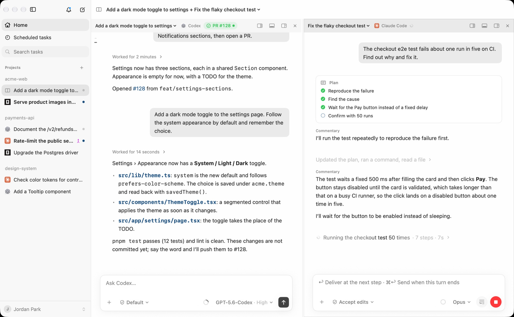
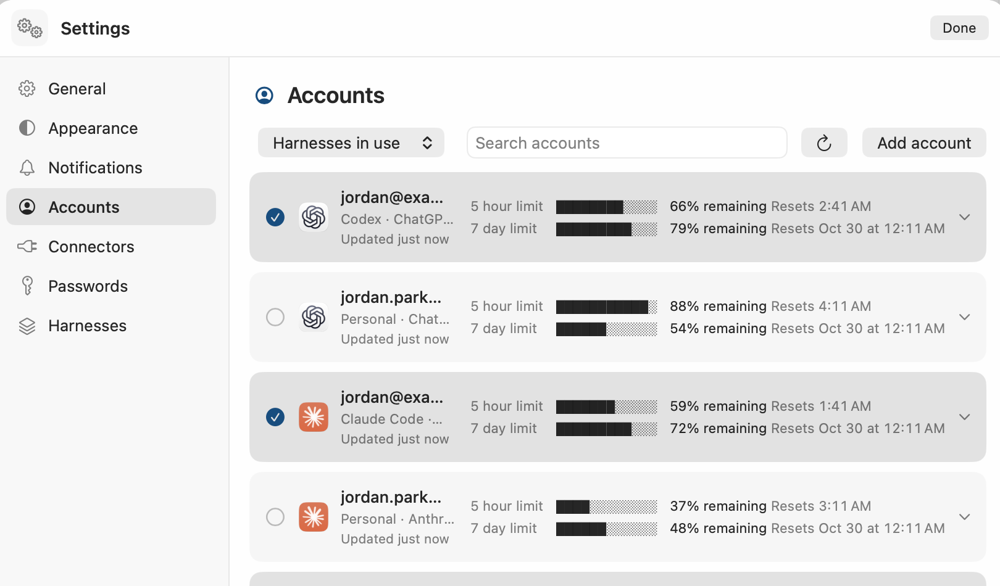
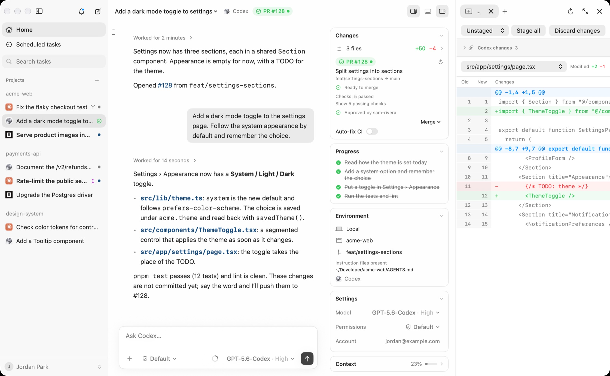
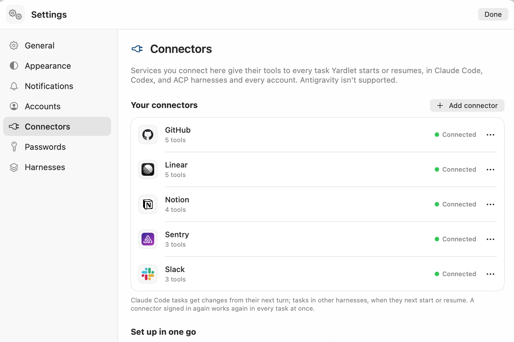

Question: I already use Codex and Claude Code. What does Yardlet change?
It runs them side by side, still signed in as you.
Yardlet is a free, open-source Mac app. It starts the agent CLIs you already use with the
sign-in they already have, and gives all of them the same sidebar, conversation view, composer and
approval cards.
Install Yardlet on your Mac?
Version 0.11.1 · macOS 15 or later · Apple silicon
Or with Homebrew: brew install --cask zzunkie/tap/yardlet
Recorded in Yardlet: Codex adds a dark mode toggle, runs the tests and opens pull request 128.
Question: Will my sessions still open in the Codex app?
Yes. Sessions stay where each agent keeps them.
Codex runs against your normal CODEX_HOME and Claude Code against its own store, so a session
started in Yardlet resumes in the Codex app or in Terminal, and the other way round. Nothing is copied or
moved.
Where things are kept
~/.codexCodex sessions, wherever you started them
~/.claudeClaude Code sessions, the same way
~/.yardletOnly Yardlet's task list, drafts and reading state
Question: What if I stop using Yardlet?
Nothing changes for your agents.
Yardlet writes nothing into the agents' own configuration; it hands them its tools when it starts them.
Quit it or remove it, and each agent, its sign-in and its sessions are as they were, ready in the
original app or CLI.
Yardlet's own data, if you want it gone too
~/.yardletTask list, drafts and reading state
~/Library/Application Support/YardletBrowser profiles and staged updates
Keychain items whose name starts with YardletConnector sign-ins, the phone remote and the password vault, plus Chromium Safe Storage if you don't use Chromium itself
System Settings › Privacy & SecurityYardlet's entries
brew uninstall --zap --cask zzunkie/tap/yardlet removes both folders together with Yardlet's
caches and preferences.
Question: Which agents does it work with?
The ones you already use, with the same controls.
Codex, Claude Code, OpenCode, Cursor Agent, Antigravity CLI, Kimi Code, Grok Build, Hermes Agent, Muse Code
and Pi share one sidebar, conversation view, composer and approval cards. The controls stay in the same
place; the choices and values come from each agent. Install and sign in to at least one of them first.

Codex adds a dark mode toggle while Claude Code tracks down a flaky test, side by side.
What every task comes with
One composer
Type the task, attach files and choose the permission mode in the same place. Each agent still asks before it acts, as it would on its own.
Plans you can follow
When an agent makes a plan, its steps sit beside the conversation and tick off as the work moves.
Model, effort, account
Chosen per task, from the choices that agent offers.
Context and limits
How much of its context a task has used, and how much of each account's session and weekly limits is left.
Product names belong to their owners. Yardlet is not affiliated with or endorsed by them.
Question: I have two Claude accounts. Can I use both?
Yes, and you see each one's limits.
Register more than one account per provider, see each account's session and weekly limits, and start a task
on the one with quota left. A saved task keeps the account it started on. Each agent runs with the sign-in
its CLI already has; Yardlet never imports credentials from other apps.

Question: How do I check what the agent changed?
Review it next to the conversation, then merge.
Diffs of the last turn, file restore and fork, a terminal and a files pane sit next to the conversation. The
pull request card follows checks and reviews through your own gh and merges when it is ready.
When checks fail, it shows the log and offers Fix CI.

Pull request 128, ready to merge, beside the diff of the file it changed.
Question: Can the agents use my email, GitHub or Slack?
Yes. Set up a connector once, and your agents get it.
Gmail, Google Calendar and Google Drive run through Yardlet's built-in MCP server on your Mac. GitHub, Slack
and dozens of remote MCP services connect with one sign-in. A connector set up once is offered to the agents
you run, and can be turned off per task.

Also in the window
A browser for agents
A Chromium panel beside the conversation that agents drive through browser tools while you watch.
Scheduled tasks
Tasks start on a schedule while Yardlet is open; a missed run goes once when it opens again. Tasks can also read, message or start one another.
Question: What does Yardlet do with my Google account?
Only what an agent asks for, for a task you gave it.
Connecting Google is optional, and you choose which of Gmail, Google Calendar and Google Drive to turn on.
Yardlet's own MCP server runs on your Mac and calls Google's APIs directly, only when an agent uses one of
these tools, and passes the result only to that agent.
What each service allows
Gmail
Search, read, draft, send and label email. No full mail access, so nothing is deleted for good.
Google Calendar
List calendars, read and change events, and check free times.
Google Drive
Read files, and create or change files of its own.
Yardlet does not sell Google data, use it for advertising, or use it to train AI models. The
privacy policy lists each permission it asks for and where the data goes.
Until Google finishes reviewing Yardlet, its sign-in screen shows an “unverified app”
warning. You can also sign in through a Google OAuth app of your own.
Question: What does Yardlet send, and where?
Nothing goes to its developer.
Yardlet has no analytics and no server that receives your work. Its task list and drafts stay in
~/.yardlet, and its only online services are an update check and, if you pair a phone, a
relay.
What goes where
Your AI providers
What an agent reads, including through a connector, goes to that agent's provider under your account. Training follows that account's settings.
Services you connect
Calls go straight from your Mac to the service. Sign-ins are kept in the macOS Keychain.
yardlet.app
Once a day the update check reads appcast.xml, with Yardlet's and its updater's version numbers and no system profile. Turn it off in Settings › General. Updates download from GitHub Releases.
Yardlet's relay
Only if you pair a phone and it is away from your Mac's network. Its messages are end-to-end encrypted; the relay cannot read them and stores none.